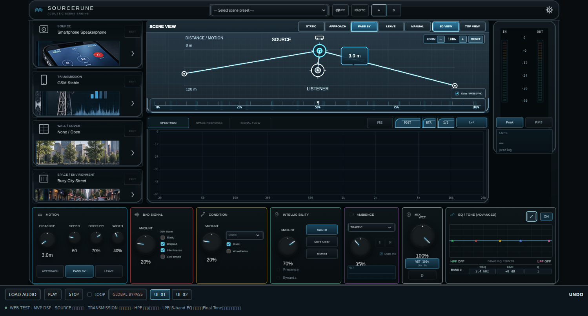

UI_01
Approved public UI image with directly editable module cards. Spectrum, meters and other sections remain visual reference only.

The preview image is not published yet. Check the GitHub preview build.
Approved public UI image with directly editable module cards. Spectrum, meters and other sections remain visual reference only.
